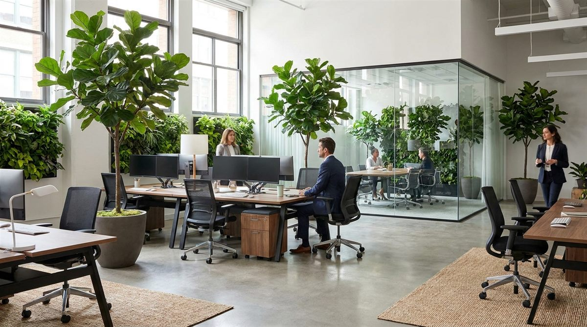
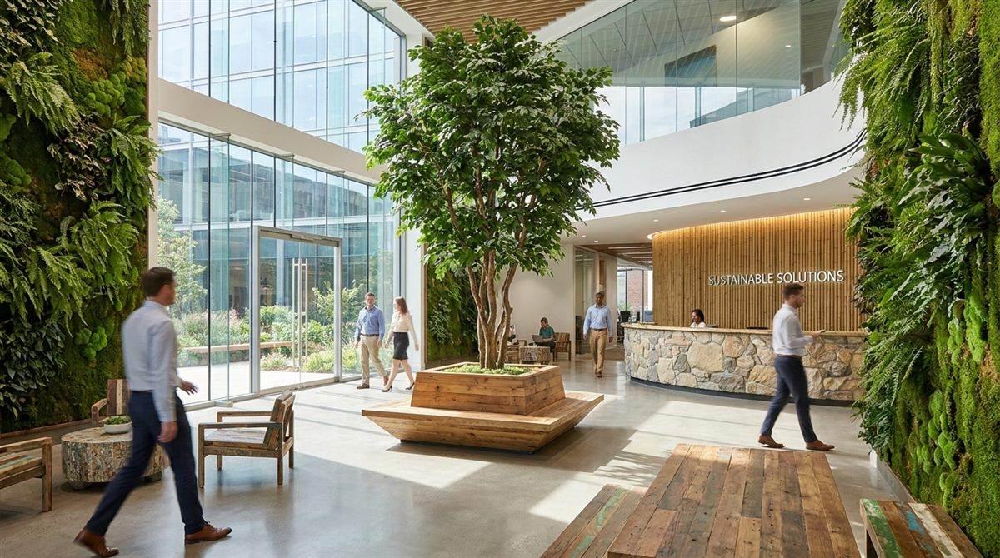
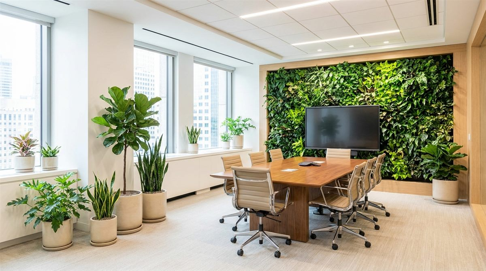

Biophilic Office Design: How Artificial Plants Transform Commercial Spaces in 2026

Office design in 2026 is no longer purely an aesthetic exercise — it's a measurable driver of productivity, retention, and operational cost. The convergence of biophilic design principles with advances in premium artificial foliage has created a new standard for commercial interiors: spaces that look and feel genuinely natural, without the maintenance burden that has historically made live plants impractical at scale in corporate environments.
Facility managers, procurement directors, and commercial designers across hospitality, corporate real estate, and retail are arriving at the same conclusion: premium artificial plants aren't a compromise — they're the strategically correct specification for most commercial applications.
Why Artificial Plants Are Transforming Commercial Spaces
The shift isn't driven by aesthetics alone. The business case is straightforward. Facility managers who have made the switch consistently cite four operational advantages that live plants simply cannot match:
- Zero ongoing maintenance — no watering schedules, no specialist contractors, no replacement cycles from seasonal die-off
- Consistent year-round appearance — the installation looks identical in January as it does in July, regardless of light levels or HVAC conditions
- Allergy-free environments — no pollen, no mould risk, no soil-borne pathogens — relevant for healthcare environments and open-plan offices with allergy-sensitive staff
- Placement without constraints — works in low-light basement atriums, high-traffic corridors, and sun-exposed glass facades where live plants would fail within weeks

The Cost-Benefit Analysis: 3-Year Total Cost of Ownership
Purchase price comparisons miss the point entirely. The real financial argument for artificial plants becomes clear when you model total cost of ownership over a typical lease cycle. A $4,125 artificial installation versus a live equivalent requiring ongoing rental, pest control, and maintenance produces a dramatically different 3-year picture — with artificial plants breaking even in just 7 months.
| Cost Category | Live Plants | Artificial Plants |
|---|---|---|
| Initial Investment | $2,500 | $4,125 |
| 3-Year Plant Rental | $10,800 | $0 |
| 3-Year Pest Control | $17,490 | $0 |
| 3-Year Cleaning | $3,060 | $3,060 |
| 3-Year Total | $33,850 | $7,185 |
| Savings with Artificial | — | $26,665 (79%) |
| ROI Period | Never | 7 months |
The return on investment materialises within 7 months — and compounds to a $26,665 saving over three years. Use our Maintenance Savings Calculator to model your specific facility.
Biophilic Design Principles for Modern Offices
Biophilic design is grounded in the concept that human beings have an innate need for connection with natural environments — a need that persists in built spaces and significantly influences wellbeing, cognitive performance, and stress regulation. Artificial plants are the practical vehicle for delivering these benefits at commercial scale.
The four biophilic principles most directly supported by artificial foliage installations:
- Visual connection with nature — Green walls, statement trees, and layered plant compositions in the peripheral field of vision consistently reduce physiological stress markers in occupants
- Non-rhythmic sensory stimuli — Varied leaf textures, colours, and plant forms create the kind of low-level visual complexity that the brain processes as calming rather than demanding
- Prospect and refuge — Strategic placement of large plants and green walls creates semi-enclosed zones that give occupants a sense of shelter within open-plan environments
- Material connection with nature — Premium PE artificial plants replicate the material qualities of natural foliage closely enough that the nervous system responds similarly — texture, colour fidelity, and scale all contribute

Case Studies: Commercial Artificial Plant Installations
Corporate Headquarters Transformation
A Fortune 500 company replaced a struggling live plant programme across their 180,000 sq ft headquarters with a LaySun artificial specification. The live plants had been maintained under a rolling service contract for six years — producing inconsistent results, persistent pest issues in the open-plan floors, and recurring complaints from facilities staff about the operational overhead.
Post-installation outcomes measured over 12 months:
- 85% reduction in facility maintenance costs attributable to plant management
- Improved employee satisfaction scores on workspace quality in the annual engagement survey
- Enhanced brand image — consistent, professional appearance in client-facing areas with zero intervention
- Complete elimination of plant-related service calls to the facilities helpdesk
Hospitality Sector: Hotel Chain Rollout
A luxury hotel group implemented artificial palm trees and mixed foliage arrangements across lobbies and common areas in six properties. The brief was 24/7 impeccable appearance with no dependence on specialist maintenance contractors — a requirement live plants categorically cannot meet.
- Consistent appearance across all properties regardless of local climate or staffing levels
- Positive guest feedback citing the "lush, tropical atmosphere" in review platforms
- Significant reduction in housekeeping time previously allocated to plant management
- Full NFPA 701 fire compliance documentation provided for all properties
Implementation Guide: Choosing the Right Artificial Foliage
Effective specification comes down to four decisions: scale, quality, placement, and compliance.
Size and Scale
The most consistent specification error is under-scaling. A 4ft plant in a 6,000 sq ft atrium has no meaningful visual impact. For biophilic design to register with occupants throughout the day — not just when they're standing next to it — you need sufficient density and height to appear in peripheral vision across the space.
- Large statement spaces (lobbies, atriums, open-plan floors): olive trees, palms, and large ficus at 8–12ft as anchor pieces
- Mid-scale zones (corridors, breakout areas, meeting rooms): 4–5ft specimens in commercial-grade vessels
- Accent and desk-level: smaller potted arrangements, tabletop compositions for individual workstation areas
Quality Indicators
- PE (polyethylene) foliage — not PVC — for realistic texture and colour fidelity
- UV-stabilised materials for any placement near windows, skylights, or exterior glass
- Durable trunk and frame construction rated for high-traffic commercial environments
- Fire-retardant certification (NFPA 701 for US installations) — non-negotiable for commercial occupancy
Placement Strategy
- Entryways and lobbies — highest ROI per plant; first impression for clients and visitors
- Conference and boardrooms — calmer visual environment, better for sustained focus and video presence
- Break and collaborative zones — biophilic research consistently identifies social spaces as highest-benefit locations
- Hallways and transition spaces — creates visual continuity and reinforces the overall environment quality
Sustainability and Environmental Impact
For organisations with ESG commitments, artificial plants contribute meaningfully to sustainability targets — more so than the "natural = sustainable" assumption about live plants suggests.
- Zero water consumption — no irrigation systems, no ongoing water footprint from maintenance
- No chemicals — pesticides, fertilisers, and fungicides associated with live plant maintenance are eliminated entirely
- Reduced logistics — no weekly maintenance vehicle visits, no plant rental delivery and collection cycles
- Extended lifespan — 7–10 year product life versus 18–24 months for live plants in commercial environments reduces material throughput significantly
Conclusion: The Standard Is Shifting
The integration of artificial plants into commercial spaces is no longer a budget-driven compromise — it's becoming the default specification for facilities professionals who have run the numbers and prioritised consistent, compliant outcomes over the theoretical ideal of live greenery that rarely survives the operational realities of commercial buildings.
As biophilic design continues to move from a premium differentiator to a standard expectation in commercial interiors, the practical and financial case for premium artificial foliage will only strengthen. The question for most facilities is no longer whether to specify artificial plants — it's how to specify them correctly.
Ready to specify for your project? LaySun supplies fire-rated PE artificial trees and green walls factory-direct to corporate offices, hotels, retail environments, and hospitality groups worldwide. Request a quote and receive full pricing within 24 hours.
Bring biophilic design to your commercial space — zero maintenance
LaySun supplies fire-rated artificial trees and green walls for corporate offices, hotel lobbies, retail environments, and atriums worldwide. Factory-direct pricing, full compliance documentation included.
Commercial Solutions Explore Systems Request a Quote →